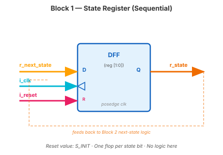
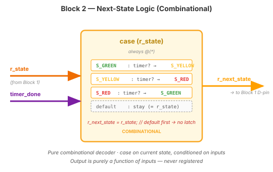
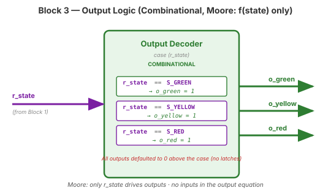
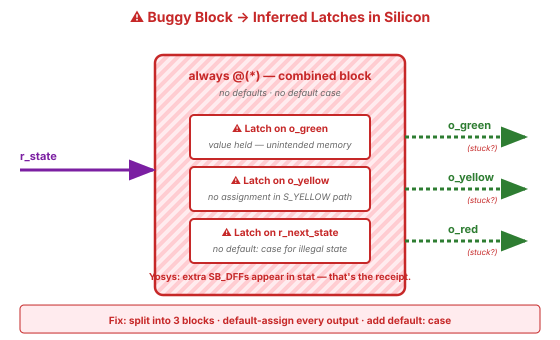

Video 2 of 4 · ~12 minutes
Dr. Mike Borowczak · Electrical & Computer Engineering · CECS · UCF
At Intel, AMD, Qualcomm, ARM — every internal style guide mandates one specific structural pattern for control logic, and every static-analysis tool (Spyglass, Lint, Design Compiler) flags deviations. Senior reviewers scan the structure before they read the logic. If the structure is wrong, the review stops there. The pattern is so widespread it works as a calling card: engineers can spot each other's training in five seconds.
“Works in sim, broken in silicon” is the most expensive sentence an engineer can write in an email. Almost every instance traces back to two things that should have been kept apart — present and next, combinational and sequential — getting blurred into a single line of code. The bug is not reproducible. It does not show in code review. It passes simulation. It appears once, in the field, on a customer's device.
“I'll just use one big always @(posedge clk) that does state transitions, state register, and output logic all together. Fewer blocks = cleaner code.”
Three blocks separate three different concerns: (1) state register (how state persists), (2) next-state logic (how state changes), (3) output logic (what state produces). Mixing these in one block mixes blocking/nonblocking, creates subtle latches, and makes the circuit hard to reason about. The template exists because engineers have broken FSMs every other way first.
// --- Block 1: state register --- always @(posedge i_clk) begin if (i_reset) r_state <= S_INIT; else r_state <= r_next_state; end

// --- Block 2: next-state logic (combinational) --- always @(*) begin r_next_state = r_state; // DEFAULT: stay (no latch) case (r_state) S_GREEN: if (timer_done) r_next_state = S_YELLOW; S_YELLOW: if (timer_done) r_next_state = S_RED; S_RED: if (timer_done) r_next_state = S_GREEN; default: r_next_state = S_INIT; // illegal-state safety endcase end

r_next_state = r_state; — prevents latch inference and means “if no transition fires, stay put.”default case at end: recovers from illegal states. For a 2-bit state with only 3 legal values, the 4th is unreachable in theory, but silicon glitches happen in practice.// --- Block 3: output logic (Moore: f(state) only) --- always @(*) begin // defaults for ALL outputs (no latches) o_red = 1'b0; o_yellow = 1'b0; o_green = 1'b0; case (r_state) S_GREEN: o_green = 1'b1; S_YELLOW: o_yellow = 1'b1; S_RED: o_red = 1'b1; default: ; // all off endcase end

default: case at end. Same discipline, same reasons, same template. Moore = outputs depend only on r_state; Mealy = outputs also depend on inputs, but the structure stays identical.
always @(*) begin case (r_state) S_GREEN: begin r_next_state = S_YELLOW; o_green = 1; end S_YELLOW: begin r_next_state = S_RED; end S_RED: begin r_next_state = S_GREEN; o_red = 1; end endcase end
Three bugs. Find them.

always block — violates the template.default: case: if r_state takes an illegal value, r_next_state isn't assigned → another latch, plus no recovery.~6 minutes
▸ COMMANDS
cd lecture_examples/week2_day07/d07_s2_ex1/
cat day07_ex01_fsm_template.v # see 3-block template
make sim # self-check
make wave # see sequence
make stat # check LUT count
make prog # flash Go Board▸ EXPECTED STDOUT
PASS: After reset: GREEN
PASS: GREEN->YELLOW
PASS: YELLOW->RED
PASS: RED->GREEN (cycle 2)
PASS: Mid-cycle reset -> GREEN
=== 5 passed, 0 failed ===▸ GTKWAVE
Signals: r_state · o_red · o_yellow · o_green · timer_done. Watch state cycle GREEN → YELLOW → RED → GREEN while outputs change in lockstep with state (pure Moore: output = f(state)).
$ yosys -p "read_verilog day07_ex01_fsm_template.v; synth_ice40 -top traffic_light; stat" -q
=== traffic_light === (3 states, binary encoded → 2 bits)
Number of wires: 10
Number of cells: 7
SB_DFF 2 ← 2 bits of state
SB_LUT4 5 ← next-state + output decode
$clog2(3) = 2 bits). 5 LUTs for all the combinational logic (next-state + output). Seven cells total for a complete traffic-light controller. That's the efficiency of a well-written FSM on an FPGA.
Ask AI: “Write a vending-machine FSM using the 3-block template: states IDLE, COIN_IN, DISPENSE, RETURN_CHANGE. Include all defaults and default cases.”
TASK
Ask AI for a 3-block FSM with 4 states.
BEFORE
Predict: 3 separate always blocks, defaults at top, default case at end.
AFTER
Strong AI uses localparam for states + has defaults. Weak AI uses magic numbers.
TAKEAWAY
If AI skips the output defaults, it'll synth with latches. Catch it before synth does.
① Three blocks: state register, next-state logic, output logic.
② Block 1 is trivial. Block 2 defaults to “stay.” Block 3 defaults outputs.
③ Every case has a default:. Every output has a default assignment.
④ This template prevents the three most common FSM bugs.
🔗 Transfer
Video 3 of 4 · ~8 minutes
▸ WHY THIS MATTERS NEXT
Your traffic light FSM had 3 states and used 2 state bits. Is that optimal? What if you used 3 bits with one-hot encoding? Video 3 shows you the tradeoff and the Yosys output that proves it. This is one of the few Verilog decisions that visibly changes silicon cost.